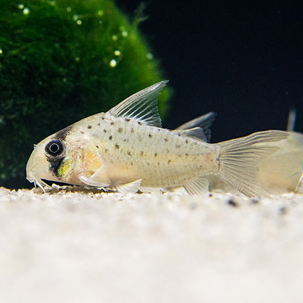

그린농장-관상어와 행복하게

아마존 강 및 남미를 대표하는 열대어 중 하나. 메기목 칼리크티스과에 속하며, 남아메리카의 아마존 수계와 라플라타 수계에 폭넓게 분포하는 물고기이다. 어원은 그리스어로 kory는 투구(헬멧), doras는 피부이며 "투구(헬멧)같은 피부"라는 뜻으로 두개골이 단단해서 붙여진 이름이다. 대개 코리로 줄여 부르는 경우가 많으며 영어권에서도 CORY라고 부른다.
코의 길이로 코리 종을 나누기도 한다 롱로즈(긴코),세미로즈(중간코),숏로즈(짧은코)로 구별 하기도 한다 대체적으로 온순한 성격을 가진 종으로, 주로 바닥 근처에서 활동하는 저서어류지만 수류를 좋아하는 종이 많으며 소형 코리도라스 등 몇몇 종들은 중층에서 헤엄쳐 다닌다. 장애물이 많고 탁한 남미 강의 바닥을 뒤져가며 살기에 시력이 약간 퇴화되고 수염 기관이 발달하며 몸집과 눈이 작아졌는데, 땅딸막한 체형과 맹해 보이는 표정의 묘한 조합으로 은근 귀여운 인상을 보여준다. 가끔 멍하게 있다가 눈을 굴리는 행동(윙크)과 먹이를 찾을 때 가는 모래 알갱이를 아가미로 뱉어내는 모습(아가미신공)이 매력 포인트.